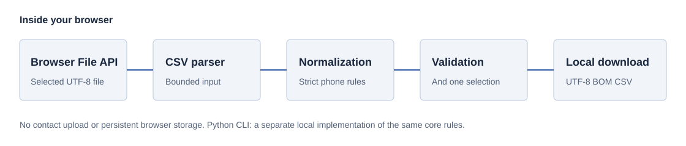

Private by architecture. Useful by design.
A cleaner contact file.
A clearer next step.
Prepare Iranian contact CSV files right here in your browser. Normalize phone formats, inspect selection rules, and download the result. Your data stays on your device.
No uploads · No account · Optional local Python CLI
SOURCE VALUE
+98 (912) 000-0001
Local mobile shape validated
NORMALIZED SELECTION
09120000001
MCI prefix group · no carrier lookup
Your data, your workspace
Read locally. Review carefully.
Choose an authorized file, or start with fictional data. Processing and export run entirely in this tab.
آمادهسازی مخاطبان
پردازش واقعی CSV، بدون آپلود
UTF-8 · حداکثر ۱ MiB و ۱٬۰۰۰ ردیف. فایل فقط در حافظه همین تب خوانده میشود.
۲. بررسی و پردازش
نمونه، اطلاعات افراد واقعی نیست.
برای شروع یک فایل انتخاب کنید یا نمونه ساختگی را امتحان کنید.
- ردیف ورودی
- —
- پذیرفته
- —
- رد شده
- —
- مقدار نامعتبر
- —
- تکرار در ردیف
- —
- تکرار بین ردیفها
- نیازمند بازبینی
- —
فیلتر فقط نمایش را تغییر میدهد؛ دانلود شامل همه ردیفهای پذیرفتهشده است. ردیفهای دارای شماره مشترک حفظ میشوند.
| ردیف | نام | شماره انتخابی | گروه پیششماره | وضعیت | دلیل بازبینی |
|---|
فایل مجاز خود را انتخاب کنید یا نمونه ساختگی را امتحان کنید.
مقایسه با داده ورودی
| ردیف | نام | مقادیر شماره در فایل |
|---|
بازبینی شامل ردیف ردشده، مقدار نامعتبر، چند گزینه معتبر، شماره مشترک، نام خالی یا گروه نامشخص است. قالب معتبر، مالکیت، دسترسی یا رضایت را اثبات نمیکند. خروجی دانلودشده را خصوصی نگه دارید.
A transparent path
from file to result.
No hidden service. The browser reads your selected file, applies deterministic rules, and creates a local download.
- Choose
Select an authorized UTF-8 CSV. BOM and quoted fields are supported.
- Normalize
Standardize supported digits and phone shapes. Reject malformed values.
- Review
Inspect accepted and rejected records, quality counts, and review reasons.
- Download
Export a UTF-8 BOM CSV. Handle this new local copy as private data.

Understand the rules
Normalize formats.
Keep the decisions visible.
Selection prefers MCI → Irancell → Rightel → Other/Unknown, then input field order. This is a product rule, not a statement about carrier quality.
Prefix groups cannot resolve number portability. Ambiguous 0931, 0932, and 0934 stay unknown.
Supported phone formats
09xxxxxxxxx, ten-digit 9xxxxxxxxx, 989…, +989…, and 00989…. Persian and Arabic digits are translated; ASCII spaces, parentheses, dots, and hyphens are tolerated.
Phone values longer than 64 characters, controls, arbitrary text, malformed plus signs, landlines, and invalid lengths are rejected. Unknown prefix groups remain accepted when the number shape is valid.
Required CSV columns and limits
Required: First Name, Last Name, Phone 1 - Value. Optional: Phone 2 - Value through Phone 4 - Value. Names may be empty. Preserve these English headers.
Browser limit: 1 MiB and 1,000 records. Duplicate headers, inconsistent row widths, invalid UTF-8, and malformed quoting are rejected. Extra columns are ignored.
Duplicates and review indicators
Equivalent numbers within a contact are suppressed. Separate contacts sharing a selected number remain separate output rows; repeated counts measure occurrences after the first.
Review indicators explain rejected rows, invalid extra values, multiple candidates, repeated selections, empty names, and unknown prefix groups. Review counts include rejected rows.
Output and spreadsheet safety
Output columns: first_name, last_name, selected_phone, mobile_operator. All-rejected input still downloads headers.
The browser prefixes formula-like name cells with an apostrophe, including formulas behind leading whitespace. The CLI preserves names. Both outputs require careful handling; import columns as text and inspect them before opening in a spreadsheet.
Privacy is a boundary
Local processing.
Deliberate handling.
There is no upload endpoint, account, telemetry, contact analytics, or remote processing service.
Contact data is held in tab memory. The tool writes no contacts to cookies, localStorage, sessionStorage, or IndexedDB. Reset clears the workspace and invalidates pending reads; close the tab when finished.
Downloading creates a file on your device. Protect inputs, outputs, backups, and access to your screen. Reset does not guarantee erasure of browser or operating-system artifacts.
A valid mobile-number shape proves neither ownership, reachability, current carrier, nor consent. This project sends no SMS. Use only data you are authorized to process.
A second way to work
Prefer the terminal?
Use the Python CLI.
Python 3.9–3.14 is tested. The CLI supports larger local files: 50 MiB and 100,000 rows, with explicit overwrite protection and atomic output publication.
Python Installation Guidegit clone https://github.com/AlirezaBelal/iran-contact-data-pipeline.git
cd iran-contact-data-pipeline
python -m venv .venv
source .venv/bin/activate
python -m pip install -e .
contact-cleaner examples/contacts.example.csv outputs/cleaned.csvWindows PowerShell: activate with .venv\Scripts\Activate.ps1. The bundled example is synthetic. Existing output files are refused unless you explicitly use --overwrite.
Browser and Python core rules are parity-tested. File-size limits, strict CSV parser details, review presentation, and formula escaping have documented differences.
Start with a file you control.
Try the fictional sample first. Review every result before downstream use.